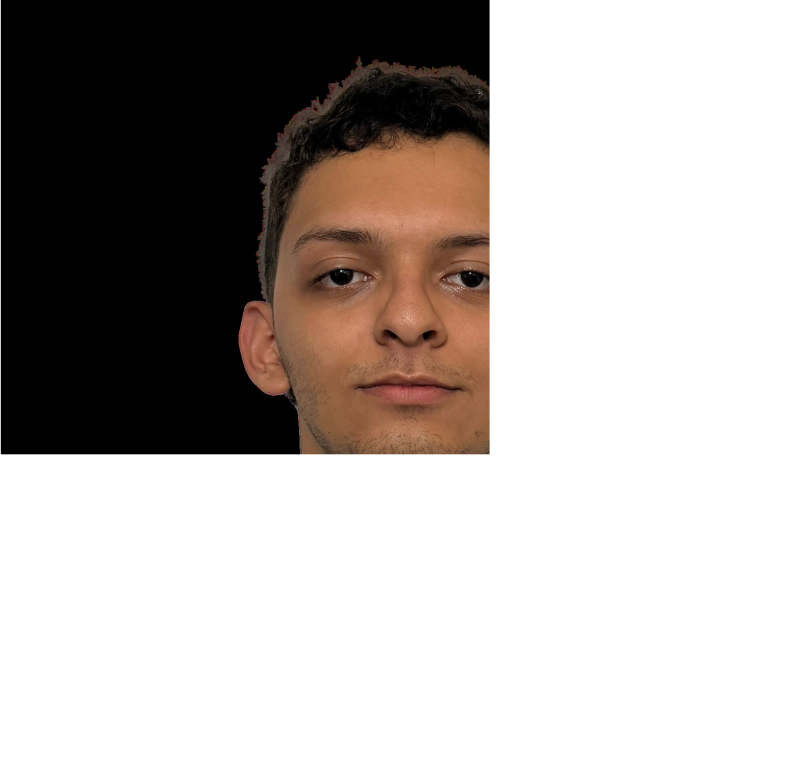

Desarrollador de Software con conocimientos sólidos en HTML, CSS y JavaScript. Familiarizado con el uso de Git, metodologías ágiles y el trabajo en equipo. Caracterizado por el compromiso en el aprendizaje continuo y la mejora constante. En búsqueda de oportunidades que fortalezcan las habilidades de liderazgo, pensamiento crítico, adaptabilidad y comunicación, para adquirir además experiencia en el desarrollo de software.